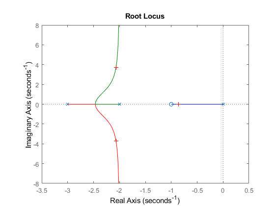
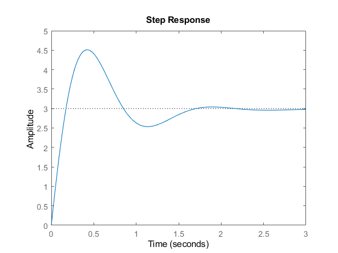

Contents
- gera a função transferência
- gera o lugar geométrico das raízes (os polos buscam os zeros no
- gera os vetores das posições das raízes associadas
- localizar graficamente um ponto no LGR
- Gera os ganhos/resíduos (r) de frações parciais associados com cada polo
- respostas ao degrau K = 20.5775 vetor sem aplicação do degrau
- Sensibilidade das raízes para uma mudança de 5% de K
close all; clc; clear;
gera a função transferência
p = [1 1]; q = [1 5 6 0]; sys = tf(p,q)
sys =
s + 1
-----------------
s^3 + 5 s^2 + 6 s
Continuous-time transfer function.
gera o lugar geométrico das raízes (os polos buscam os zeros no
infinito)
figure(1) rlocus(sys); % o → zeros % x → polos % Linhas coloridas são os deslocamento das raízes (polos) conforme a % variação do ganho k % Quando as raízes se encontram (k = 0.419), é criticamente amortecido % P/ polos: % Duas raízes Subamortecido % Raízes iguais Sem amortecimento % Sem raízes
gera os vetores das posições das raízes associadas
[r, K] = rlocus(sys);
localizar graficamente um ponto no LGR
disp("-------------------------------------------------------------") figure(2) rlocus(sys); rlocfind(sys) % aparece a cruz que mostra onde o polos estão localizados % para aquele valor, resposta no prompt
------------------------------------------------------------- Select a point in the graphics window selected_point = -2.0341 + 3.6923i ans = 15.4933
Gera os ganhos/resíduos (r) de frações parciais associados com cada polo
polo (p)
disp("-------------------------------------------------------------") K = 20.5775; num = K * [1 4 3]; den = [1 5 6+K K 0]; [r, p, K] = residue(num, den) % Usado para expansão em frações parciais
-------------------------------------------------------------
r =
-1.3786 - 1.7010i
-1.3786 + 1.7010i
-0.2429 + 0.0000i
3.0000 + 0.0000i
p =
-2.0505 + 4.3228i
-2.0505 - 4.3228i
-0.8989 + 0.0000i
0.0000 + 0.0000i
K =
[]
respostas ao degrau K = 20.5775 vetor sem aplicação do degrau
K = 20.5775; num = K * [1 4 3]; den = [1 5 6+K K]; sys = tf(num, den) figure(3) step(sys) % characteristics → peak response: pico % characteristics → setting time: mostra onde começa a entrar em regime % permanente % characteristics → rise time: p/sistemas superamortecidos
sys = 20.58 s^2 + 82.31 s + 61.73 ----------------------------- s^3 + 5 s^2 + 26.58 s + 20.58 Continuous-time transfer function.
Sensibilidade das raízes para uma mudança de 5% de K
k = 20.5775; den = [1 5 6+K K]; r1 = roots(den); dK = 1.0289; Km = K + dK; denm = [1 5 6+Km Km]; r2 = roots(denm); dr = r1 - r2; S = dr / (dK / K);